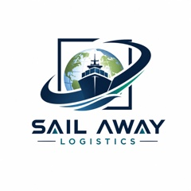

Organisation de transport européen
Organisation de transport routier entre pays européens. Nous coordonnons le trajet, la capacité et les documents de transport.
Voir le détail du serviceParler de mon envoi ↗
Nous organisons le transport routier des entreprises en Espagne et entre les pays européens. Décrivez-nous votre marchandise. Nous coordonnons le transport.
Trajet, date et marchandise. Une demande adaptée à votre expédition.
Palettes, marchandises et équipements. Chaque demande est étudiée selon ses besoins.
Organisation de transport routier entre pays européens. Nous coordonnons le trajet, la capacité et les documents de transport.
Voir le détail du serviceParler de mon envoi ↗De quelques palettes à un chargement complet. Nous recherchons une solution adaptée au volume, au poids et aux conditions de livraison.
Voir le détail du serviceParler de mon envoi ↗Pour les marchandises soumises à des délais serrés. Faisabilité et disponibilité sont vérifiées avant de confirmer la solution et les horaires.
Voir le détail du serviceParler de mon envoi ↗Sailaway Logistics et Wolf Express DOO collaborent dans le transport routier. Chaque opération est organisée selon le trajet, la marchandise et la disponibilité.
Nous avons l’expérience de la coordination des enlèvements et des livraisons sur les sites de ces réseaux logistiques européens.
Exemples de trajets. Serbie–Autriche, Serbie–Italie et Serbie–Slovénie.
Marchandises palettisées, équipements et fret industriel ou commercial.
Chargement par grue, chariots élévateurs et véhicules avec hayon, selon l’expédition.
Prise de rendez-vous, informations précises sur la marchandise et suivi pendant le transport.
Départ, destination, date, poids et dimensions. Précisez les conditions de chargement et de déchargement.
Nous vérifions la disponibilité et vous présentons une proposition avant la confirmation du service.
Suivi du chargement et de la livraison, avec gestion des documents CMR/POD de l’opération.
Nous organisons des trajets entre pays, y compris sans passage par l’Espagne. Consultez-nous pour votre envoi.
Voir les cartes de couverture →Non. Nous étudions aussi les transports entre d'autres pays de l'Union européenne, selon l'itinéraire, la marchandise et la disponibilité.
Indiquez les codes postaux de départ et d'arrivée, les dates et horaires, la marchandise, le nombre de palettes, le poids, les dimensions et les moyens de chargement et de déchargement.
Non. La proposition dépend de l'itinéraire, des délais, du véhicule et des contraintes de manutention. Vous pouvez indiquer un budget cible, mais ce n'est pas obligatoire.
Le lot partiel peut convenir à un petit volume avec des délais flexibles. Nous étudions un véhicule dédié si le volume, les horaires ou la limitation des manutentions le nécessitent, sous réserve de disponibilité.
Indiquez le trajet et la marchandise. Nous étudierons les options pour votre entreprise.